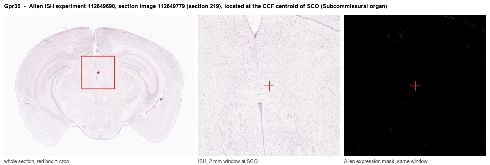
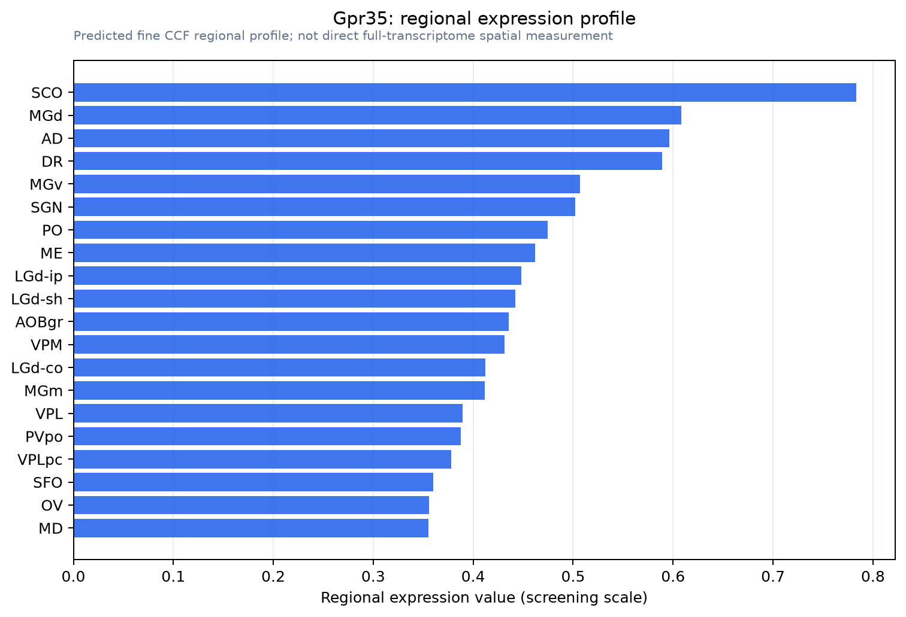

Gpr35
G protein-coupled receptor 35 (Kynurenic acid receptor) (KYNA receptor)
Spatial tier: RESTRICTED · Class: GPCR · Top region: SCO (Subcommissural organ) · Positive regions: 23/554
43.2Discovery Score
37.4Targetability Score
CEvidence grade C
What this means: Gpr35: fine CCF profile is restricted toward SCO (top regions: SCO, MGd, AD, DR, MGv; 23 positive regions); direct spatial validation is still required.
Function in SCO: evidence, prediction, innovation
- Gene function
- Gpr35 encodes a Gi/G13-coupled class A GPCR proposed to be activated by the tryptophan metabolite kynurenic acid and by lysophosphatidic acid. It signals through beta-arrestin recruitment and RhoA, and is best characterised in gut epithelium, immune cells and vasculature, where it modulates inflammation, calcium mobilisation and mitochondrial remodelling; GPR35 agonists are protective in ischaemia.
- Region function
- The subcommissural organ is a tiny ependymal secretory gland at the entrance of the cerebral aqueduct beneath the posterior commissure; it releases SCO-spondin into the CSF, where it condenses into Reissner's fibre, and its failure causes aqueductal stenosis and hydrocephalus.
- Published in this region
- inferred No region-specific literature found. Wang 2006 established the kynurenic acid-GPR35 pairing and Oka 2010 the lysophosphatidic acid activity; Wyant 2022 showed GPR35 agonists remodel mitochondria and protect against ischaemia, and Sun 2022 showed kynurenic acid blocks inflammasome activation through GPR35. In brain, kynurenic acid is produced largely by astrocytes and cleared into CSF, so the CSF-ependymal interface is the nearest relevant anatomy, but no SCO study exists.
- Predicted function
- Prediction: at the SCO, GPR35 would place a CSF-secreting ependymal gland under the control of CSF kynurenic acid, providing a Gi-mediated brake on secretion or on local inflammatory signalling that engages when brain tryptophan-kynurenine metabolism rises during infection, stress or ageing. Intracerebroventricular GPR35 agonist (zaprinast or lodoxamide), or ependymal Gpr35 deletion, is predicted to change SCO-spondin output and Reissner's-fibre integrity and hence CSF flow, rather than to produce a behavioural phenotype; this would be a tractable way to test whether kynurenine metabolism feeds back on CSF homeostasis.
- Innovation
- ★★★★☆ 4/5 Coupling CSF kynurenic acid to a CSF-secreting gland is a genuinely new idea, and knockout mice plus well-characterised agonists and antagonists already exist.
- Tools
- Gpr35 knockout mice; agonists zaprinast, lodoxamide and pamoic acid; antagonists CID-2745687 and ML145; anti-GPR35 antibodies; FoxJ1-CreER (JAX 027012) for ependymal deletion; no Gpr35-Cre line.
- References
Direct evidence located at the region

Allen ISH experiment 112649690, section image 112649779 (section 219): the section that contains the CCF centroid of Subcommissural organ according to the Allen image-to-atlas alignment (reference_to_image), with a 2 mm window around that point. Left: whole section, red box = window. Middle: ISH signal. Right: Allen's expression-mask view of the same window. open this image in the Allen viewer
Look it up yourself: Allen Mouse Brain ISH for Gpr35Allen reference atlas: SCO (structure 599626923)ABC Atlas MERFISH viewer(in the ABC Atlas choose dataset MERFISH-C57BL6J-638850-CCF, colour cells by gene "Gpr35" or by parcellation_substructure "SCO")All genes confined to SCO + 3-D brain
Direct spatial evidence
MERFISH REGION LOCATOR

Regional expression figure

Predicted WMB × fine-CCF profile; not direct full-transcriptome spatial measurement.
Spatial profile
Evidence and specificity
- Evidence status
- PREDICTED_FINE
- Direct sources
- None; predicted localization only
- Exclusive threshold
- 12 positive regions out of 554
- Spatial specificity
- 0.321
- Top-region fraction
- 0.063
- Filter status
- PASS
Interpretation limits
- Cell-type-to-region projection is imputed expression, not direct spatial measurement.
- Adult reference atlases do not establish stability across age, sex, strain, state, or disease.
- Transcript abundance does not guarantee protein abundance or genetic-tool performance.